교통기사 (2007-03-04 기출문제)
1과목: 교통계획
1. 다음 공식 중 내부수익률(r)을 나타내는 것은? (단, Bt=t년도의 편익, Ct=t년도의 비용임)
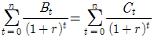
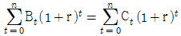
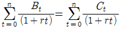
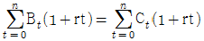
(정답률: 알수없음)

2. 통행분포(Trip Distribution)단계에 사용되는 모형 중 프라타모형의 계산과정을 보다 단순화시킨 모형은?
- 카테고리분석
- 디트로이트 모형
- 중력 모형
- 회귀분석 모형
(정답률: 알수없음)
3. 다음 중 교통존(Zone) 설정시 고려하여야 할 사항과 가장 거리가 먼 것은?
- 행정구역과 가급적 일치 시킨다.
- 간선도로가 가급적 존경계선과 일치하도록 한다.
- 존을 크게 하면 조사의 정밀도는 저하되지만 조사비용과 분석시간을 줄일 수 있다.
- 각 존은 가급적 이질적인 토지이용이 포함되도록 한다.
(정답률: 알수없음)
4. 두 장소간의 교통량 교류는 두 장소의 토지이용에 의한 활동량의 곱에 비례하고 한 장소에서 다른 장소로 통행하는데 따른 교통불편성에 반비례한다는 것과 관련된 것은?
- Rowry모델
- Gravity모델
- Batty모델
- Wilson모델
(정답률: 알수없음)
5. 평균 운행속도 25km/h로 일방향 노선거리 15km를 운행하는 버스가 최대 50명까지 실어 나를 수 있다. 배차간격이 5분이면 필요한 총 차량규모는?
- 15대
- 17대
- 19대
- 21대
(정답률: 70%)
6. 장기교통계획에 대한 설명으로 옳은 것은?
- 서비스 지향적
- 저자본 비용
- 다수의 대안
- 시설 지향적
(정답률: 100%)
7. 교통수요관리방안 중 차량수요를 감소시키기 위한 방법으로 가장 거리가 먼 것은?
- 재택근무
- 도심통행료 징수
- 대중교통이용의 편리화
- 램프 미터링
(정답률: 100%)
8. 교통수요예측기법 중 집계형모형의 변수로 사용되는 것은?
- 개인의 통행수
- 개인의 목적수
- 가구의 이용수단
- 평균가구 특성
(정답률: 알수없음)
9. 공공사업의 수행에 있어 민간자본을 유치하는 목적과 가장 관계가 먼 것은?
- 국민부담을 경감시키면서 사회간접자본을 확충시키기 위해서
- 민간부분을 참여시켜 민간업체의 완전경쟁을 유도하기 위해서
- 민간부분을 참여시킴으로써 경영을 합리화, 효율화시키기 위해서
- 민간부분에 투자기회를 확대하여 국민경제를 활성화시키기 위해서
(정답률: 알수없음)
10. 실제조건하의 신호교차로에서 정지해 있던 차량이 정지선을 통과 할 수 있는 최대교통량을 의미하는 것은?
- 교통량비
- 포화교통류율
- 포화도
- 첨두시간 교통류율
(정답률: 알수없음)
11. 어느 노선의 용량이 시간당 7,000대이고 자유 통행시간이 1시간 30분이다. BPR의 통행량-속도함수식을 이용하여 통행량이 10,000 대일 경우 통행시간은?
- 약 1.57시간
- 약 2.12시간
- 약 2.44시간
- 약 3.25시간
(정답률: 알수없음)
12. 통행시간을 이용하여 최소통행시간이 걸리는 경로에 모든 통행량을 배정하는 방법은?
- All or nothing 배정법
- 반복 과정법(iterative assignment)
- 다중 경로 배정법(multi-path assignment)
- 분할 배정법 (incremental assignment)
(정답률: 알수없음)
13. 도로의 일정 구간을 차량이 주행할 때, 구간의 길이를 주행한 시간으로 나눈 값으로 정의되는 것은?
- 지점속도
- 주행속도
- 자유속도
- 설계속도
(정답률: 알수없음)
14. 통행분포(Trip Distribution)단계에서 교통량 추정에 사용되는 Detroit법, Fratar법은 주로 어떤 경우에 사용되는가?
- 교통 패턴의 변화가 큰 경우
- 교통 패턴의 변화가 작은 경우
- 사회경제활동의 변화가 큰 경우
- 장래에 교통 여건의 변화가 큰 경우
(정답률: 90%)
15. 교통정책의 상위목표에 해당되지 않는 것은?
- 기동성 향상
- 교통사고의 감소
- 에너지 절약
- 도시통행의 서비스수준 향상
(정답률: 알수없음)
16. 교통 수요예측에 사용되는 외생변수가 아닌 것은?
- 상주인구, 공장출하액
- 상품판매액, 자동차보유대수
- 고용인구, 용도별토지면적
- 주택보급율, 강수량
(정답률: 알수없음)
17. 도시교통정비기본계획, 도시교통정비중기계획은 각각 몇 년 단위로 수립하여야 하는가?
- 10년, 5년
- 20년, 10년
- 20년, 15년
- 30년, 15년
(정답률: 알수없음)
18. 도시교통의 일반적인 특성에 관한 설명 중 옳지 않은 것은?
- 도시교통은 대량 수송을 필요로 한다.
- 도시교통은 통행목적을 달성하기 위해 도시 내의 각 지점을 연결해 주는 단거리 교통이다.
- 도시교통은 하루 중 오전과 오후 2회에 걸쳐 피크현상이 발생된다.
- 도시교통은 도시 전체에 걸쳐 통행이 균등하며 정시성이 약하다.
(정답률: 알수없음)
19. Dt = 20 - 3P1+ 4P의 교통수요모형에서 Dt은 택시교통수요, P1은 택시통행비용, P2는 지하철통행비용이다. 이 경우 지하철 통행비용에 대한 택시교통수요의 교차탄성력은?
- (-3)+4P2
- 4P2/(20-3P1+4P2)
- 1/(1-2P1+(P2/P1))
- 4
(정답률: 92%)
20. 3km의 도로구간에서 첫 번째의 차량은 60km/h로 주행하여 3분, 두 번째 차량은 30km/h로 달려서 6분, 세 번째 차량은 15km/h로 달려서 12분 소요되었다. 이 3대 차량의 공간평균속도는?
- 20km/h
- 30km/h
- 40km/h
- 50km/h
(정답률: 알수없음)
2과목: 교통공학
21. 중방향 설계시간 교통량(DDHV)를 구할 때 필요하지 않은 요소는?
- 첨두시간계수
- 설계시간계수
- 중방향계수
- 연평균 일교통량
(정답률: 알수없음)
22. 가변차로제에 대한 설명 중 옳은 것은?
- 교통사고 발생률이 감소한다.
- 교통통재시설 설치비가 많이 소요된다.
- 교통량이 많은 방향에 대한 용량 부족이 초래된다.
- 대중교통노선 조정이 반드시 필요하다.
(정답률: 82%)
23. 신호교차로에 관한 용어의 설명 중 옳지 않은 것은?
- 임계차로군 : 주어진 신호현시 동안 가장 큰 임계 v/c 값을 갖는 차로군
- 제어지체 : 신호제어로 인해 차로군이 속도를 줄이거나 정지함에 따른 지체
- 진행연장시간 : 황색신호가 켜지면 교차로 안이나 가까이에서 진행하던 차량은 정지선에 급정거를 할 수 없으므로 황색신호의 일부분을 녹색신호처럼 불가피하게 이용하는 시간
- 양방 보호좌회전 신호 : 서로 마주 보는 접근로의 좌회전이 동일 현시에 진행하는 신호
(정답률: 91%)
24. 지점속도조사(spot speed study)를 통해서 분석할 수 없는 것은?
- 제한속도의 설정
- 교통표지판 위치설정
- 사고와 속도와의 관계분석
- 교통정체 평가분석
(정답률: 82%)
25. 다음 중 운전자가 주행도중에 나타나는 위험한 물체나 도로표지 등의 정보를 인식하여 주행조작에 활용하는 과정을 옳게 나열한 것은?
- 인지 - 확인 - 판단 - 반응
- 확인 - 인지 - 판단 - 반응
- 반응 - 인지 - 확인 - 판단
- 인지 - 판단 - 확인 - 반응
(정답률: 알수없음)
26. 시간평균속도와 공간평균속도에 대한 설명 중 옳은 것은?
- 시간평균속도는 도로 구간의 길이와 관련된 속도로 교통류 분석시 주로 이용되며, 공간평균속도는 속도분석, 교통사고 분석시 주로 이용된다.
- 공간평균속도는 일정 시간 동안 도로의 한 지점을 통과하는 모든 차량의 평균속도이다.
- 공간평균속도는속도의 산술평균값이며 시간평균속도는 속도의 조화평균값이다.
- 교통의 흐름이 전혀 변화하지 않는 경우를 제외하고 공간평균속도는 항상 시간평균속도보다 낮은 값을 나타낸다.
(정답률: 알수없음)
27. 출발하는 차량의 속도가 55km/시간이고 차량의 자유속도가 70 km/시간일 경우 충격파의 속도는?
- -10 km/시간
- -15 km/시간
- -20 km/시간
- -25 km/시간
(정답률: 알수없음)
28. 어느 고속도로 기본구간이 승용차 70%, 트럭 20%, 버스 10%의 혼압율을 가지며, 트럭과 버스의 승용차 환산계수가 각각 4.0과 3.0 이라 할 때 중차량보정계수 fHV? (단, 일반지형, 평지)
- 0.36
- 0.46
- 0.56
- 0.66
(정답률: 40%)
29. 교통분야에서 사용되는 확률분포 중 계수분포와 관련된 식의 형태가 아닌 것은?
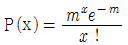
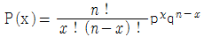
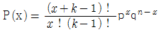
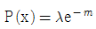
(정답률: 알수없음)
30. 다음과 같은 조건에서 중방향 계수는?
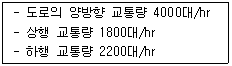
- 0.45
- 0.55
- 0.50
- 0.82
(정답률: 알수없음)
31. 일방 통행제의 장점이 아닌 것은?
- 평균통행속도 증가
- 통행거리의 감소
- 용량의 증대
- 안전성 향상
(정답률: 알수없음)
32. 보행자를 위한 교통시설을 설계할 때 사용되는 일반적인 보행자의 보행속도로 가장 알맞은 것은?
- 0.5m/sec
- 1.2m/sec
- 1.8m/sec
- 2.5m/sec
(정답률: 80%)
33. 어느 교차로에 도착한 차량이 좌회전일 확률이 1/3, 우회전일 확률이 2/3이다. 3대가 무작위로 도착할 때 2대 이하의 차량이 우회전할 확률은?
- 0.0370
- 0.2222
- 0.4444
- 0.7036
(정답률: 알수없음)
34. 36대의 차량을 속도 조사한 결과 평균 60km/h, 분산 36을 얻었다. 이 교통류의 모(母)평균속도 μ의 95% 신뢰구간은? (단, 단위는 km/h)
- 57 ＜ μ ＜ 63
- 59 ＜ μ ＜ 61
- 58.04 ＜ μ ＜ 61.96
- 57.62 ＜ μ ＜ 62.38
(정답률: 46%)
35. 속도와 밀도와의 관계를 선형으로 설명하는 모형은?
- Greenshields 모형
- Greenberg 모형
- Pipes 모형
- Edie 모형
(정답률: 82%)
36. 지방의 도시내 도로의 시간당 교통량이 120대 였고, 첨두 15분간 교통량이 60대 라고 한다면 첨두시간계수(PHE)는?
- 0.5
- 0.6
- 0.7
- 0.8
(정답률: 72%)
37. 계획중인 어떤 고속도로의 설계지정항목 중 계획년도 AADT=60,000대이다. 이 교통량을 계획서비스 수준(V/C=0.7)으로 처리하기 위해서는 몇 차로 도로가 되어야 하는가? (단, K=0.15, D=0.6, 차로당 용량(C)=2,200vph)
- 왕복 4차로
- 왕복 6차로
- 왕복 8차로
- 왕복 10차로
(정답률: 알수없음)
38. 안전정지시거를 계산할 때 주로 사용하는 일반적인 운전자들의 인지 ㆍ 반응시간(PIEV Time)은?
- 3.5초
- 2.5초
- 1.5초
- 1.0초
(정답률: 알수없음)
39. 다음 중 고속도로 기본구간의 서비스 수준을 나타내는데 사용되는 효과척도는?
- 밀도
- 평균통행속도
- 교통량
- 지체시간
(정답률: 100%)
40. 고정식 신호등에 대한 설명으로 옳지 않은 것은?
- 신호 주기가 일정하기 때문에 인접 신호등과 연동화가 용이
- 다수의 보행인이 존재하는 장소에 적합
- 교통의 흐름을 방해하는 조건의 영향을 배제
- 교통량의 시간별 변동이 클 경우 지체의 최소화 가능
(정답률: 85%)
3과목: 교통시설
41. 다음 중 다이아몬드형 인터체인지에 대한 설명으로 옳지 않은 것은?
- 용지 소요가 적다.
- 저급 도로외의 교차시에 적합하다.
- 영업소 운영에 적합하나 공사비가 많이 든다.
- 우회거리가 짧아 교통경제상 유리하다.
(정답률: 86%)
42. 도로가 갖고 있는 기하구조형태와 교통류의 특성을 기초로 하여 접근성과 이동성의 기능에 따라 도로를 분류할 때 이용되는 특성이 아닌 것은?
- 평균통행거리
- 다른 기능을 갖는 도로와의 연계체계
- 교통량과 사고건수
- 교통관제시설의 형태
(정답률: 55%)
43. 설계속도가 80km/h인 왕복 2차로 도로의 편경사 접속설치율은 1/150이다. 도로중심선의 표고가 일정하다고 가정하고, 도로중심선을 중심으로 편경사를 적용할 때, 도로중심선에서 4m 떨어진 길어깨의 표고가 30cm 변하는데 필요한 접속설치길이는?
- 45m
- 40m
- 35m
- 30m
(정답률: 34%)
44. 도시지역 간선도로에서 보도의 최소 폭은?
- 1.5m
- 2.0m
- 3.0m
- 4.0m
(정답률: 알수없음)
45. 교통섬을 설치시 고려할 사항 중 맞지 않는 것은?
- 시야가 확보되지 않거나 곡선이 급한 지점에는 반드시 설치하여야 한다.
- 위험한 교통흐름을 제어하고 안전한 주행속도를 유지하여야 한다.
- 교통관제시설을 설치할 수 있는 적당한 크기의 공간을 확보하여야 한다.
- 교통흐름을 명확히 분리해야 하나 설치회수를 가급적 최소화 하여야 한다.
(정답률: 75%)
46. 도로가 철도와 평면 교차하는 도로의 구조에 대한 설명 중 옳지 않은 것은?
- 철도와 교차각을 45˚ 이상으로 한다.
- 건널목의 양측에 각각 30m 이내의 구간(건널목 부분을 포함한다.)은 직선으로 한다.
- 가시구간의 최소길이는 건널목에서의 철도차량의 최고속도에 따라 110m ~ 350m로 한다.
- 건널목 전후 도로의 종단경사는 6%이하로 하는 것이 원칙이다.
(정답률: 알수없음)
47. 다음 중 주차장의 설계기준 자동차에 대한 설명으로 옳지 않은 것은?
- 주차장이 피크로 될 때에 가장 영향을 주는 차종을 설계기준 자동차로 한다.
- 질서 있는 주차를 기대하기 위하여 과대한 차량을 설계기준 자동차로 사용하지 않는다.
- 설계기준 자동차에는 장래의 자동차 치수의 변화를 고려한다.
- 주차장 내의 주차구획과 차로는 설계기준 자동차에 따라 주차 및 통행이 용이하고 효과적인 주차운용을 할 수 있도록 그 치수와 배치를 정해야 한다.
(정답률: 알수없음)
48. 비상주차대에 대한 설명으로 틀린 것은?
- 고속도로에서 우측 길어깨의 폭원이 3.0m 미만일 경우에는 비상주차대를 설치하여야 한다.
- 고속도로에서의 비상주차대의 설치간격은 750m를 표준으로 한다.
- 비상주차대의 설치간격 결정 시에는 고장차가 그대로의 상태로 주행할 수 있을 것인가 또는 인력으로 밀어 대피시킬 것인가를 감안하여 가능한 거리를 판단해야 한다.
- 도시고속도로, 주간선도로로서 우측 길어깨의 폭원이 2.0m 미만일 경우에는 계획교통량이 적은 경우를 제외하고 비상주차대를 설치해야 한다.
(정답률: 73%)
49. 다음 중 주차장 바닥면 마감재의 조건이 아닌 것은?
- 내수성이 있을 것
- 내구성이 있을 것
- 미끄러움이 있는 면일 것
- 내마모성이 있을 것
(정답률: 알수없음)
50. 설계속도 100km/h, 적용 최대 편경사가 7%인 차도의 최소평면곡선반경은?
- 440m
- 360m
- 365m
- 190m
(정답률: 알수없음)
51. 터널의 부속시설에 관한 설명 중 틀린 것은?
- 터널의 환기시설을 검토하기 위하여 교통량, 터널의 길이를 고려해야 한다.
- 기계환기방식에는 종류식, 반횡류식, 횡류식이 있다.
- 터널안의 일산화탄소의 농도는 100ppm 이하가 되도록 환기시설을 설치하여야 한다.
- 환기시의 터널 안 풍속이 초속 20 미터를 초과하지 않도록 환기시설을 설치하여야 한다.
(정답률: 알수없음)
52. 도시지역의 고속도로의 설계속도로 가장 알맞은 것은?
- 130km/h
- 100km/h
- 70km/h
- 60km/h
(정답률: 73%)
53. 다음 중 버스정류장(Bus Bay)을 설계할 때 고려할 사항과 가장 관계가 먼 것은?
- 설계속도
- 차로의 수
- 감속차로의 길이
- 가속차로의 길이
(정답률: 알수없음)
54. 고속도로에 설치하는 버스정류장의 제원중 설계속도가 100㎞/h인 경우 버스정류장의 길이의 표준은? (단, 직접식의 경우)
- 310m
- 420m
- 470m
- 520m
(정답률: 알수없음)
55. 교통정체의 해소와 교통사고의 감소를 목적으로 하는 교차로 개선을 실행한 경우에는 실행 후에 개선에 대한 분석 및 검토가 이루어지는 것이 필수적이다. 이에 대한 분석 중 틀린 것은?
- 기본적인 검토사항은 교통량, 교통용량, 주행시간 등이 있다.
- 교통사고와 관련된 교차로 효과평가 조사 시기는 개선직후와 3개월, 6개월 경과후가 바람직하다.
- 개선에 대한 분석 및 검토는 단발성으로 끝나는 것이 아니고, 지속적으로 자료를 수집하여 충분히 수행한다.
- 개선 목적에 따라 사고발생 상황이나 교통특성의 변화 등에 대한 검토도 수행한다.
(정답률: 알수없음)
56. 주차대수 1대에 대한 주차장 주차단위구획의 크기 기준으로 가장 알맞은 것은? (단, 직각주차)
- 너비 2.3m 이상, 길이 5.0m 이상
- 너비 2.5m 이상, 길이 5.5m 이상
- 너비 2.3m 이상, 길이 5.5m 이상
- 너비 2.5m 이상, 길이 6.0m 이상
(정답률: 84%)
57. 다음 중 지방지역 도로의 종류 및 등급이 맞지 않는 것은?
- 주간선도로 - 국도
- 보조간선도로 - 국도 및 지방도
- 집산도로 - 지방도 및 군도
- 국지도로 - 지방도 및 군도
(정답률: 75%)
58. 도로의 기능에 관한 설명 중 옳은 것은?
- 간선도로의 주기능은 접근성이다.
- 집산도로는 이동성보다 접근성이 더 큰 도로다.
- 보조간선도로의 주기능은 접근성이다.
- 국지도로는 주기능이 이동성이다.
(정답률: 알수없음)
59. 다음 중 버스정류장의 설치 위치로 가장 적당하지 않은 곳은?
- 직선구간
- 표준치 이상의 곡선반경을 갖는 구간
- 종단경사가 작은 구간
- 연결로의 전방
(정답률: 80%)
60. 평탄지 도로에서의 최소정지시거는? (단, 설계속도=80km/h, 마찰계수=0.4, 종단구배=3%)
- 약 104m
- 약 109m
- 약 114m
- 약 119m
(정답률: 42%)
4과목: 도시계획개론
61. 도시관리계획결정의 고시가 있은 때에는 지적이 표시된 지형도에 도시관리계획사항을 명시한 도면을 작성하여야 하는데, 이때 일반적인 도시지역의 경우 축적으로 옳은 것은?
- 축적 1/500 내지 1/1,500
- 축적 1/1,500 내지 1/3,000
- 축적 1/3,000 내지 1/4,500
- 축적 1/4,500 내지 1/6,000
(정답률: 알수없음)
62. 교통계획의 기본 목표에 해당되지 않는 것은?
- 독창성
- 안전성
- 편리성
- 경제성
(정답률: 64%)
63. 도시의 발전에 있어서 도심의 생성과 가장 연관성이 높은 용어는?
- 규모의 경제
- 집적경제
- 범위의 경제
- 잠재수요
(정답률: 알수없음)
64. 기준년도의 인구와 출생율, 사망율 및 인구이동의 변화요인을 고려하여 장래의 인구를 추정하는 방법은?
- 등차급수법
- 집단생잔법
- 비교유추법
- 최소자승법
(정답률: 알수없음)
65. 다음과 같은 특징을 갖는 국지도로는?
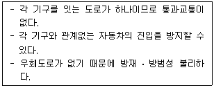
- 쿨데삭(cul-de-sac)
- 루프(loop)형
- 격자형
- T자형
(정답률: 알수없음)
66. 도시계획에서 고도지구를 지정하는 이유는?
- 건축물의 용도제한
- 상업 및 업무지구 조성
- 건축물의 높이제한
- 건폐율의 규제
(정답률: 50%)
67. 다음 중 광역시설에 해당되지 않는 것은?
- 2 이상의 특별시 ㆍ 광역시 ㆍ 시 또는 군의 관할구역에 걸치는 도로
- 2 이상의 특별시 ㆍ 광역시 ㆍ 시 또는 군의 관할구역에 걸치는 항만
- 2 이상의 특별시 ㆍ 광역시 ㆍ 시 또는 군의 관할구역에 걸치는 광장
- 2 이상의 특별시 ㆍ 광역시 ㆍ 시 또는 군의 관할구역에 걸치는 공동구
(정답률: 알수없음)
68. 뷰캐넌 리포트(Buchanan Report)의 제안은 주구네 가로망 체계의 구성을 위한 기본개념으로서 매우 유용하다. 다음 중 뷰캐넌 리포트의 가로망체계의 구성에 해당되지 않는 것은?
- 보행자전용도로
- 주간선도로
- 보조간선도로
- 집산도로
(정답률: 42%)
69. 대도시 주거지역에서 간선도로(4차로 이상)의 밀도로서 가장 적합한 것은?
- 2~ 4km/km2
- 4~ 8km/km2
- 5~10km/km2
- 12~15km/km2
(정답률: 알수없음)
70. 다음 중 도시계획에서 건폐율에 관한 규제의 목적으로 가장 알맞은 것은?
- 대지면적의 최소한도 규제
- 대지의 영세화 방지
- 도시의 과밀화 방지
- 대지의 공지 공간 확보
(정답률: 알수없음)
71. 다음 중 도시관리계획의 범위에 대한 설명으로 옳지 않은 것은?
- 용도지역 ㆍ 용도지구의 지정 또는 변경에 관한 계획
- 도시의 기본적인 공간구조와 장기발전방향을 제시하는 계획
- 기반시설의 설치 ㆍ 정비 또는 개량에 관한 계획
- 도시개발사업 또는 정비 사업에 관한 계획
(정답률: 알수없음)
72. 다음 중 주택재개발사업에 대한 설명으로 가장 알맞은 것은?
- 도시저소득주민이집단으로 거주하는 지역으로서 정비기반시설이 극히 열악하고 노후 ㆍ 불량건축물이 과도하게 밀집한 지역에서 주거환경을 개선하기 위하여 시행하는 사업
- 정비기반시설이 열악하고 노후 ㆍ 불량건축물이 밀집한 지역에서 주거환경을 개선하기 위하여 시행하는 사업
- 정비기반시설은 양호하나 노후 ㆍ 불량건축물이 밀집한 지역에서 주거환경을 개선하기 위하여 시행하는 사업
- 토지의 효율적 이용과 도심 또는 부도심 등 도시기능의 회복이나 상권활성화 등이 필요한 지역에서 도시환경을 개선하기 위하여 시행하는 사업
(정답률: 34%)
73. 몇 개의 대도시와 그 주변지역의 도시들이 서로 연담화하여 공간적으로 융합된 지역을 의미하는 것은?
- 도시지역(urban region)
- 거대도시(megalopolis)
- 가상도시(virtual city)
- 위성도시(satellite cities)
(정답률: 19%)
74. 격자형 가로망에 대한 설명 중 옳지 않은 것은?
- 지형이 평탄한 도시에 적합하다.
- 도심의 기념비적인 건물을 중심으로 사방과 연결된다.
- 도로기능의 다양성이 결여된다.
- 뉴욕과 필라델피아에서 볼 수 있다.
(정답률: 40%)
75. 다음 조건에 따른 주거지역의 택지면적은?
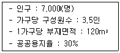
- 342,857m2
- 285,714m2
- 240,013m2
- 200,062m2
(정답률: 40%)
76. 다음의 중심지 이론에 대한 설명 중 옳지 않은 것은?
- 중심지는 주변지역의 주민들에게 재화와 용역을 공급해 주는 정주공간이다.
- 중심성은 중심지에서 구매될 수 있는 재화와 용역, 즉 중심기능의 다양성으로 표현한다.
- 중심지 이론은 1차 및 2차 산업의 입지론이라 말할 수 있다.
- 중심지 기능의 도달범위는 공간적 극복비용인 교통비가 결정적 역할을 한다.
(정답률: 알수없음)
77. 수도권정비계획법상 수도권안에서 인구 및 산업의 적정배치를 위한 권역의 구분에 속하지 않는 것은?
- 과밀억제권역
- 성장관리권역
- 자연보전권역
- 개발제한권역
(정답률: 알수없음)
78. 다음 중 가도시화 현상(假賭市化 現象)에 대한 설명으로 가장 알맞은 것은?
- 도시의 부양능력에 비해 지나치게 많은 인구가 도시에 집중하여 인구만 비대해진 도시화 현상
- 몇 개의 대도시와 그 주변지역의 도시들이 서로 연담하여 공간적으로 융합된 지역의 도시화 현상
- 낙후지역의 효과적 개발을 위해 성자잠재력이 큰 지점이나 지방도시에 집중 투자함으로써 발생하는 도시화 현상
- 대도시 중심부의 기능이 약화되어 도시의 공간구조가 바뀌어 지는 현상
(정답률: 50%)
79. 다음 중 교차점 광장의 설치 목적과 가장 거리가 먼 것은?
- 교차점에서 차량 주행 원활
- 통행의 안전
- 주변도시 경관 미화
- 시민대회 및 군중집회 용이
(정답률: 알수없음)
80. 다음 중 토지이용계획의 목표를 설정하는데 있어서 고려해야 할 일반적인 사항으로 바람직하지 않은 것은?
- 쾌적하고 건강한 생활을 영위하는데 필요한 조건을 갖추어야 한다.
- 다양한 주생활에 필요한 제반 기능을 충족시켜야 한다.
- 단지간 계층별 독립성을 통한 프라이버시의 제고를 모색해야 한다.
- 개발비용을 최소화 하도록 해야 하나 환경의 질적 수준을 동시에 고려해야 한다.
(정답률: 알수없음)
5과목: 교통관계법규
81. 도로교통법상 긴급시 긴급자동차의 통행에 관한 설명 중 옳은 것은?
- 긴급자동차의 운전자는 교통의 안전에 특히 주의하면서 통행하여야 한다.
- 끼어들기를 할 수 없다.
- 앞지르기를 할 수 없다.
- 도로가 일방통행으로 된 때 도로의 좌측부분으로 통행 할 수 없다.
(정답률: 55%)
82. 노외주차장인 주차전용건축물의 건폐율 기준은?
- 100분의 80 이하
- 100분의 85 이하
- 100분의 90 이하
- 100분의 95 이하
(정답률: 알수없음)
83. 도로의 관리청에 관한 설명 중 옳지 않은 것은?
- 국도의 관리청은 건설교통부장관이다.
- 서울특별시, 부산광역시 구역안에 있는 고속국도는 특별시장, 광역시장이 관리청으로 된다.
- 국가지원지방도의관리청은도지사(특별시, 광역시안의 구간은 당해 시장)이다.
- 국도와 국가지원지방도외의 기타의 도로의 관리청은 그 노선을 인정한 행정청이 된다.
(정답률: 32%)
84. 다음의 ( )안에 들어갈 말로 알맞은 것은?
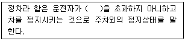
- 1분
- 3분
- 5분
- 10분
(정답률: 50%)
85. 다음 중 교통영향평가에 따른 재평가의 사유로 옳은 것은?
- 사업지와 가장 근접한 도로에서의 자동차 평균주행 속도가 교통영향평가시의 예측보다 30%이상 감소한 경우
- 사업지와 가장 근접한 도로의 도로용량이 교통영향평가시의 예측보다 20%이상 감소한 경우
- 사업지와 가장 근접한 교차로의 평균지체시간이 교통영향평가시의 예측보다 30%이상 증가된 경우
- 사업지와 가장 근접한 교차로의 교통사고가 교통영향평가시의 예측보다 20%이상 증가된 경우
(정답률: 59%)
86. 도로법상 도로관리청은 도로의 구조에 대한 손궤, 미관의 보존 또는 교통에 대한 위험을 방지하기 위하여 접도구역을 지정할 수 있는데, 이때 접도구역은 도로경계선으로부터 최대 얼마를 초과하지 않는 범위안에서 지정할 수 있는가?
- 40m
- 30m
- 20m
- 10m
(정답률: 알수없음)
87. 다음의 도로의 구조 및 시설에 관한 설명 중 옳지 않은 것은?
- 회전차로의 폭은 최소 2.5m이상으로 한다.
- 인접한 설계구간과의 설계속도의 차이는 30km/h이하가 되도록 한다.
- 중앙분리대는 측대를 설치하여야 하는데, 측대의 폭은 설계속도가 80km/h이상인 경우 0.5m이상으로 한다.
- 도시지역의 일반도로에 주정차대를 설치하는 경우에는 그 폭은 2.5m이상이 되도록 한다.
(정답률: 알수없음)
88. 다음은 도시기본계획의 수립을 위한 공청회 및 의견청취에 대한 설명이다. 틀린 것은?
- 특별시장, 광역시장, 시장, 군수 등은 공청회를 열어 주민 및 관계 전문가로부터 의견을 들어야 한다.
- 공청회를 개최하고자 하는 때에는 개최예정일 1일전까지 1회 이상 공고하여야 한다.
- 공청회에서 제시된 의견이 타당하다면 도시기본계획수립에 반영하여야 한다.
- 특별시장, 광역시장, 시장, 또는 군수는 도시기본계획 수립시 미리 당해 특별시, 광역시, 시, 또는 군의 의회의 의견을 들어야 한다.
(정답률: 40%)
89. 도로의 구분에 있어서 도시지역과 지방지역을 구체적으로 구분할 때 사용하는 지표는 인구의 규모로서 도시지역은 몇 명이상 거주하는 지역을 대상으로 하는가?
- 3000명
- 5000명
- 7000명
- 10000명
(정답률: 알수없음)
90. 도로교통법상교통안전에필요한주의,규제,지시등을 표시하는 표지판이나 도로의 바닥에 표시하는 기호나 문자 또는 선 등으로 정의되는 것은?
- 안전표지
- 교통신호
- 교통안내
- 교통지시
(정답률: 알수없음)
91. 도로의 구분에 따른 설계 기준 자동차로 옳지 않는 것은?
- 고속도로 : 세미트레일러
- 주간선도로 : 대형자동차
- 보조간선도로 : 대형자동차
- 국지도로 : 소형자동차
(정답률: 40%)
92. 도시교통정비 기본계획시 주차장의 건설 및 운영에 관한 계획에 포함될 사항이 아닌 것은?
- 주차시설 및 주차실태의 조사·분석
- 주차수요예측 및 공급계획
- 주차수요관리 정책
- 주차관리정책 방향
(정답률: 30%)
93. 교통신호기가 표시하는 신호의 뜻에 대한 설명으로 맞는 것은? (단, 차량신호등)
- 황색등화 : 차마는 우회전을 할 수 있고 우회전하는 경우에는 보행자의 횡단을 방해하지 못한다.
- 적색등화 : 차마는 비보호좌회전 표지가 있는 교차로에서 좌회전 할 수 있다.
- 황색등화의 점멸 : 차마는 다른 교통과 무관하게 진행할 수 있다.
- 적색등화의 점멸 : 차마는 정지선 직전에 정지 후 우회전할 수 없다.
(정답률: 50%)
94. 원활한 교통을 확보하기 위하여 도로에 전용차로를 설치할 수 있는 설치권자는?
- 시장
- 지방경찰청장
- 구청장
- 경찰서장
(정답률: 알수없음)
95. 지체장애인의 전용주차장의 주차대수 1대에 대한 주차단위구획의 크기 기준은?
- 너비 2.3 미터 이상, 길이 5.0 미터 이상
- 너비 2.0 미터 이상, 길이 3.5 미터 이상
- 너비 1.7 미터 이상, 길이 4.5 미터 이상
- 너비 3.3 미터 이상, 길이 5.0 미터 이상
(정답률: 알수없음)
96. 노상주차장에서의 설비기준 중 주차대수규모가 최소 몇 대 이상인 경우 장애인 주차면수를 1면이상 설치하여야 하는가?
- 10대
- 20대
- 25대
- 50대
(정답률: 50%)
97. 국토의 계획 및 이용에 관한 법률상 용도지구 중 학교시설 ㆍ 공용시설 ㆍ 항만 또는 공항의 보호, 업무기능의 효율화, 항공기의 안전운항 등을 위하여 지정하는 지구는?
- 풍치지구
- 미관지구
- 보존지구
- 시설보호지구
(정답률: 알수없음)
98. 도시교통정비 촉진법상 교통 시설의 효율을 극대화하기 위하여 행하는 모든 행위로 정의되는 것은?
- 교통시설운영
- 교통시설관리
- 교통체계설계
- 교통체계관리
(정답률: 알수없음)
99. 도시교통정비촉진법상 건설교통부장관이 도시교통정비지역안에서 도시교통의 개선을 위하여 해당 지역을 관할하는 특별시장 ㆍ 광역시장 또는 도지사에게 명할 수 있는 도시교통의 개선명령의 내용에 포함되지 않는 것은?
- 버스공동배차제의 실시
- 교통산업종사원의 근로환경의 개선
- 교통수단간 환승요금제 실시
- 교통사고 예방을 위한 대책 수립 실시
(정답률: 알수없음)
100. 다음의 도로교통법에 정의된 용어에 대한 설명 중 옳지 않은 것은?
- 차로라 함은 차마가 한 줄로 도로의 정하여진 부분을 통행하도록 차선에 의하여 구분되는 차도의 부분을 말한다.
- 횡단보도라 함은 보행자가 도로를 횡단할 수 있도록 안전표지로써 표시한 도로의 부분을 말한다.
- 길가장자리구역이라 함은 보도와 차도가 구분되지 아니한 도로에서 보행자의 안전을 확보하기 위하여 안전표지 등으로 경계를 표시한 도로의 가장자리 부분을 말한다.
- 긴급자동차라 함은 그 본래의 긴급한 용도로 제작된 차를 말한다.
(정답률: 알수없음)
6과목: 교통안전
101. 교통사고를 유발 요인별로 분류할 때 인적요인(人的要因)과 관계가 가장 먼 것은?
- 운전자의 적성
- 운전습관
- 운전자의 가정
- 운전자의 생리적 조건
(정답률: 알수없음)
102. 안전한 도로가 만족시키도록 설계되고 관리되어야 하는 사항이 아닌 것은?
- 기준 이하의 상태를 운전자에게 경고한다.
- 운전자의 잘못된 형태를 포용하지 않는다.
- 비정상적인 구간에서는 운전자를 유도한다.
- 운전자의 상충 지점 통과를 통제한다.
(정답률: 알수없음)
103. 한 차량이 단속적으로 20m에 이어 15m의 바퀴자국을 남기고 정지하였을 경우 이 차량의 제동전 초기속도는? (단, f는 0.4로 한다.)
- 55.0 km/시
- 58.0 km/시
- 59.6 km/시
- 61.6 km/시
(정답률: 50%)
104. 사고경험에 기초한 위험지점 선정을 위해 일반적으로 사용되는 기법과 가장 관계가 먼 것은?
- 사고율법
- 사고건수법
- 율-품질관리법
- 사고위험율법
(정답률: 알수없음)
1⑤. 지방부 도로의 안전조치 중 비용-효과성과 안전효율성을 동시에 높게 만족시키는 조치와 거리가 먼 것은?
- 차로폭 확장
- 야광안내지주
- 사고지점 재포장
- 유도표시
(정답률: 알수없음)
106. 다음 사항 중 교통사고 발생을 능동적으로 억제시키는 조치는?
- 노면(露面) 마찰계수 증대조치
- 위험 지역에 가드레일(Guard Rail)설치
- 충격 흡수용 범퍼
- 운전자용 에어 백(Air Bag)
(정답률: 82%)
107. 충격완화시설을 우선적으로 설치해야 하는 곳으로 적당하지 않은 곳은?
- 차량의 속도가 높은 곳
- 사고건수가 많은 곳
- 교통량이 많은 곳
- 조명도가 낮은 곳
(정답률: 알수없음)
108. 다음 중 교통사고에 영향을 주는 운전자의 후천적 능력이 아닌 것은?
- 성격
- 주의력
- 차량조작능력
- 현혹회복력
(정답률: 알수없음)
109. 다음 중 교차로 사고분석에 주로 사용되는 교통사고율은?
- 차량 10,000대당 사고
- 진입차량 100만대당 사고
- 인구 10만명당 사고
- 통행량 1억대ㆍ㎞당 사고
(정답률: 알수없음)
110. 다음 중 차량 10,000대당 사망률을 바르게 표현한 것은? (단, R=10,000대당 사망률, B=년 총 사망자수, M=차량등록대수)
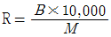
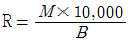
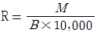
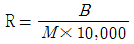
(정답률: 알수없음)
111. 교통사고조사에 포함되어야 할 주요 내용과 가장 거리가 먼 것은?
- 사고발생지점 주변도로의 보행자수
- 사고의 발생지점 및 발생시간
- 사고발생시의 도로조건
- 사고에 관련된 차종 및 차량의 수
(정답률: 90%)
112. 일반적인 교차로의 교통사고 특성에 대한 설명 중 옳은 것은?
- 4지 교차로 보다 3지 교차로가 사고율이 높다.
- 교통량이 많을수록 사고율이 높다.
- 사고율은 주도로의 교통량보다 부도로(교차도로)의 교통량에 의해 크게 영향을 받는다.
- 보호좌회전이 비보호좌회전보다 사고율이 높다.
(정답률: 알수없음)
113. 지하식 보행시설에 대한 설명으로 옳지 않은 것은?
- 나쁜 날씨로부터 보호처를 제공한다.
- 전통적인 격자형 가로 패턴을 따를 필요가 없다.
- 시각적으로나 물리적으로 도시미관을 해치지 않는다.
- 유지, 관리가 쉬우며 건설비가 저렴하다.
(정답률: 알수없음)
114. 다음 중 도로상에 나타난 스키드마크(Skidmark)로부터 차량의 제동시 속도를 산출에 영향을 미치는 요인과 가장 거리가 먼 것은?
- 스키드마크의 길이
- 교통류율
- 타이어와 노면의 마찰계수
- 노면의 종단 경사
(정답률: 알수없음)
115. 연 3건의 교통사고가 발생하는 한 교차로에 1건 이하의 사고가 발생할 확률은? (단, 교통사고 발생건수는 포아송분포를 따른다.)
- 0.15
- 0.20
- 0.25
- 0.30
(정답률: 알수없음)
116. 교통안전을 고려한 평면교차로 설계원칙으로 틀린 것은?
- 상충점의 수를 줄인다.
- 분류와 합류회수를 줄인다.
- 가장 많은 교통량을 가진 접근로의 교통류는 속도감소를 위해 신호등으로 통제한다.
- 가능하면 합류하는 도로간의 속도차를 적게 한다.
(정답률: 알수없음)
117. 교통사고지점에 대한 기술적인 검토는 크게 사고관련부문, 교통운영부문, 도로환경부문, 철도와의 교차부문으로 나눌 수 있다. 이 중 도로환경 부문의 검토사항과 가장 관계가 먼 것은?
- 시거
- 차두간격
- 포장상태
- 도로의 기하구조
(정답률: 70%)
118. 위험도로 선정을 위해 사용되는 분석방법 중 미국의 교통연구원에서 발간한 교통사고 분석체계에 기술된 합리적인 방법으로 각지점의 사고율을 산정하고 그 지점의 사고율이 유사한 조건을 갖는 도로에 대한 사고율보다 현저히 높은지의 여부를 검토하기 위한 절차에 근거한 것이며 사고발생 확률이 poisson 분포에 따른다는데서 출발하는 분석방법은?
- 교통사고 건수에 의한 방법
- 통계적 교통사고율 분석방법
- 교통사고 현황판에 의한 방법
- 교통사고 피해정도에 의한 방법
(정답률: 알수없음)
119. 교통사고를 예방 또는 그로 인한 피해를 경감시키기 위한 대책 중 3E와 관계가 가장 먼 것은?
- 교육(Education)
- 규제(Enforcement)
- 환경(Environment)
- 공학(Engineering)
(정답률: 93%)
120. 치사율을 올바르게 나타낸 식은?
- (사망자수/부상자수) × 100(%)
- (사망자수/사고건수) × 100(%)
- (사망자수/인사사고건수) × 100(%)
- (사망자수/물피사고건수) × 100(%)
(정답률: 100%)